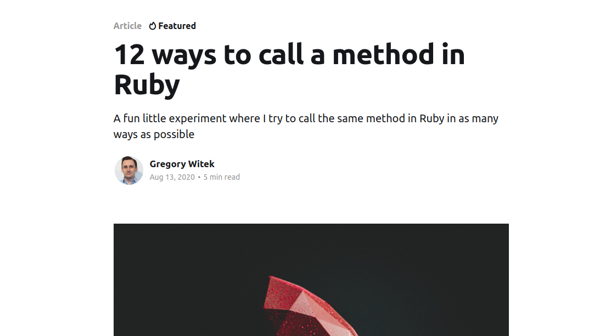
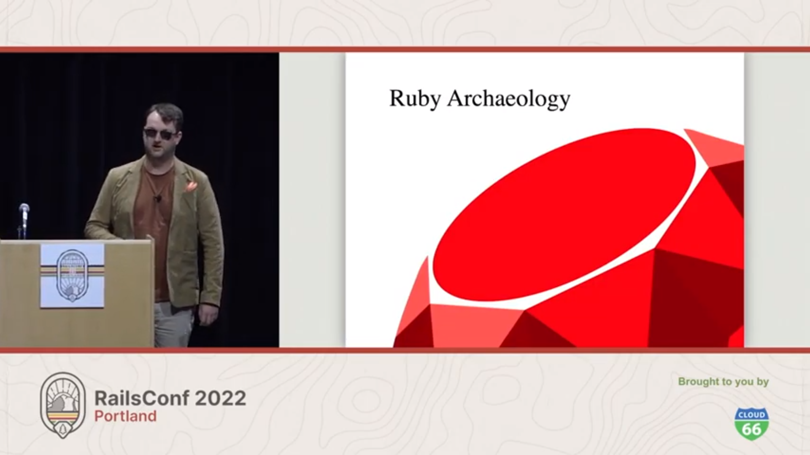
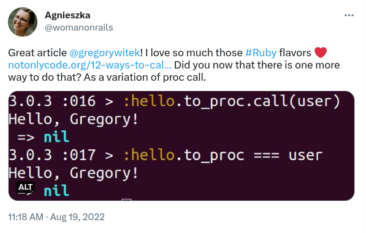

Ruby Rendezvous
Method Call, Proc, and Beyond
Agnieszka Małaszkiewicz at Fractal Soft
Mastering Ruby's Methodology: Unleashing the Power of Procs, Mapping Techniques, and Rubinius' to_proc Method
Unlocking the Potential of Ruby: Deep Dive into Method Invocation, Proc Utilization, and the Intricacies of map and to_proc
Ruby Rendezvous: Method Call, Proc, and Beyond
I joined Ruby community when...
Ruby 1.9.3
Rails 3.0
A lightning talk by
Gary Bernhardt from CodeMash 2012
Call a method in Ruby



Proc in case
Call method with argument
Say my name
map(&:name)
Call map with argument method
Hash in map
Passing argument to map
1 + 2
 ### Links
- [Wat lightning talk](https://destroyallsoftware.com/talks/wat)
- [parsel.y](https://github.com/ruby/ruby/blob/master/parse.y#L4992-L5000)
- [Why do two strings separated by space concatenate in Ruby?](https://stackoverflow.com/questions/23811203/why-do-two-strings-separated-by-space-concatenate-in-ruby/)
- [Scope resolution operator](https://en.wikipedia.org/wiki/Scope_resolution_operator#Ruby)
- [Rubocop about double colons](https://github.com/rubocop/ruby-style-guide#double-colons)
- [Literals doc](https://github.com/ruby/ruby/blob/master/doc/syntax/literals.rdoc#label-String+Literals)
- [Discussion about string literals doc](https://stackoverflow.com/questions/18193792/where-is-rubys-string-literal-juxtaposition-feature-officially-documented/18194632#18194632)
- [Yacc](https://en.wikipedia.org/wiki/Yacc)
- [Backus–Naur form](https://en.wikipedia.org/wiki/Backus%E2%80%93Naur_form)
- [12 ways to call a method in Ruby](https://www.notonlycode.org/12-ways-to-call-a-method-in-ruby/)
- [RailsConf 2022 - Ruby Archaeology by Nick Schwaderer](https://youtube.com/watch?v=53ueEIS0cng)
- [Rails and Merb Merge](https://yehudakatz.com/2008/12/23/rails-and-merb-merge/)
- [Together: The Merb Story](https://yehudakatz.com/2020/02/19/together-the-merb-story/)
### Links
- [Rubinius](https://github.com/rubinius/rubinius)
- [Ruby current Proc doc](https://ruby-doc.org/current/Proc.html)
- [Ruby Proc doc 1.9.1](https://ruby-doc.org/core-1.9.1/Proc.html)
- [Ruby Proc doc 1.8.6](https://ruby-doc.org/core-1.8.6/Proc.html)
- [Method#curry](https://www.rubydoc.info/stdlib/core/Method:curry)
- [Ruby map(&:method) syntax - meaning & usage](https://womanonrails.com/one-line-map-ruby)
- [Method object](https://ruby-doc.org/current/Method.html)
- [Functional programming in Ruby](https://womanonrails.com/functional-programming-ruby)
- [Iterators in Ruby](https://womanonrails.com/ruby-iterators)
- [Things you didn't know about Ruby](https://womanonrails.com/things-you-dont-know-about-ruby)
### Links
- [Wat lightning talk](https://destroyallsoftware.com/talks/wat)
- [parsel.y](https://github.com/ruby/ruby/blob/master/parse.y#L4992-L5000)
- [Why do two strings separated by space concatenate in Ruby?](https://stackoverflow.com/questions/23811203/why-do-two-strings-separated-by-space-concatenate-in-ruby/)
- [Scope resolution operator](https://en.wikipedia.org/wiki/Scope_resolution_operator#Ruby)
- [Rubocop about double colons](https://github.com/rubocop/ruby-style-guide#double-colons)
- [Literals doc](https://github.com/ruby/ruby/blob/master/doc/syntax/literals.rdoc#label-String+Literals)
- [Discussion about string literals doc](https://stackoverflow.com/questions/18193792/where-is-rubys-string-literal-juxtaposition-feature-officially-documented/18194632#18194632)
- [Yacc](https://en.wikipedia.org/wiki/Yacc)
- [Backus–Naur form](https://en.wikipedia.org/wiki/Backus%E2%80%93Naur_form)
- [12 ways to call a method in Ruby](https://www.notonlycode.org/12-ways-to-call-a-method-in-ruby/)
- [RailsConf 2022 - Ruby Archaeology by Nick Schwaderer](https://youtube.com/watch?v=53ueEIS0cng)
- [Rails and Merb Merge](https://yehudakatz.com/2008/12/23/rails-and-merb-merge/)
- [Together: The Merb Story](https://yehudakatz.com/2020/02/19/together-the-merb-story/)
### Links
- [Rubinius](https://github.com/rubinius/rubinius)
- [Ruby current Proc doc](https://ruby-doc.org/current/Proc.html)
- [Ruby Proc doc 1.9.1](https://ruby-doc.org/core-1.9.1/Proc.html)
- [Ruby Proc doc 1.8.6](https://ruby-doc.org/core-1.8.6/Proc.html)
- [Method#curry](https://www.rubydoc.info/stdlib/core/Method:curry)
- [Ruby map(&:method) syntax - meaning & usage](https://womanonrails.com/one-line-map-ruby)
- [Method object](https://ruby-doc.org/current/Method.html)
- [Functional programming in Ruby](https://womanonrails.com/functional-programming-ruby)
- [Iterators in Ruby](https://womanonrails.com/ruby-iterators)
- [Things you didn't know about Ruby](https://womanonrails.com/things-you-dont-know-about-ruby)

Agnieszka Małaszkiewicz
agnieszka (at) fractalsoft (dot) org